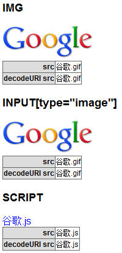
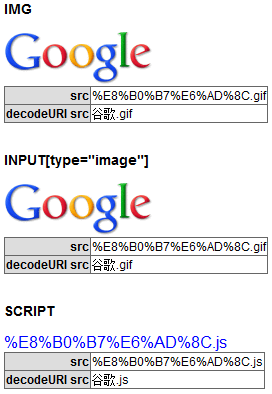

根据 W3C HTML4.01 规范中的描述，虽然 URI 不包含非 ASCII 值，用户有时候却会在属性类型为 %URI; 的值中指定包含有非 ASCII 字符的 URI。比如下例中的 href
属性值是不合法的：
<A href="http://foo.org/Håkon">...</A>
建议用户端在这种情况下采取以下协定处理非 ASCII 字符：
关于 URI 类型 及 URI 属性值中的非 ASCII 字符（Non-ASCII characters in URI attribute values）的详细信息，请参考 HTML4.01 规范 6.4 URIs 及 附录B.2.1 中的内容。
IE 默认情况下对 src 属性中字符统一使用 Unicode 编码。
Firefox Chrome Safari Opera 则根据页面实际字符内码情况，将非 ASCII 字符内容转化为该页内码编码值，然后将其编码值按照 URI 形式组装为内码为 Unicode 编码的字符串。
这将引发一些兼容性问题。如：
所有浏览器对于直接使用 IFRAME 元素引入的 Flash 均会自动生成 EMBED 元素去加载该 Flash，但是真正传入 Flash 文件内解析的文字内码可能是 Unicode 编码、转为 UTF-8
编码表现形式的 Unicode 编码或者以该页内码编码为依据的 UTF-8 编码表现形式的 Unicode 编码。他们会导致 Flash 取得 GET 参数值后进的自动编码转换有误。
若直接使用 IFRAME 元素引入包含中文的 Flash 地址，则可能造成在非 IE 浏览器中接收到的字符串为编码后的，若 Flash 程序内部处理不当，则可能造成其显示出乱码，甚至某些功能不可用。
若直接使用未经解码的 src 属性值中的内容，则可能造成在非 IE 浏览器中得到的字符串格式不正确。
| 所有浏览器 |
|---|
src 属性为 IFRAME、FRAME、IMG、INPUT、EMBED、SCRIPT 等元素所有，首先分析与 IFRAME 元素有关的问题。
编写如下 ActionScript 3.0 代码，功能为显示传入参数的程序：showpara.fla
//字符串转为其对应的内码函数 function StrToByteArray( strValue:String):ByteArray { var byAaryR:ByteArray = new
ByteArray(); byAaryR.endian=Endian.BIG_ENDIAN; for (var i:int = 0; i < strValue.length; i++) {
byAaryR.writeShort(strValue.charCodeAt(i)); } return byAaryR; } var tf:TextField = new TextField();
tf.type=TextFieldType.INPUT; tf.border=true; tf.x=5; tf.y=5; tf.width=190; tf.height=900;
tf.multiline=true; tf.wordWrap=true; var str:String="参数："; var kv:String; var
paras:Object=LoaderInfo(this.root.loaderInfo).parameters; for (kv in paras) {
str+="\n"+kv+":"+paras[kv].toString(); } str+="\nURL："+LoaderInfo(this.root.loaderInfo).url;
tf.htmlText="<div style='font-size:16px;'>"+str+"</div>"; //依次将get参数内每个字符的内码输出 tf.htmlText
+="<div style='font-size:16px;'>实际内码：</div>"; var
byteArray:ByteArray=StrToByteArray(LoaderInfo(this.root.loaderInfo).url.split("?wd=")[1]); for (var
i:int = 0; i < byteArray.length; i++) { tf.htmlText+=byteArray[i].toString(16).toLocaleUpperCase(); }
addChild(tf);
编写如下静态测试代码，页面编码为 GBK：
<iframe src="showpara.swf?wd=中文A" style="width:200px;
height:300px;"></iframe>
上面代码直接使用 IFRAME 元素的 src 属性引入了一个 Flash 的地址“showpara.swf?wd=中文A”，并且通过 URL 查询部分为 Flash 程序传入参数，且参数中包含中文汉字。
这段代码在不同浏览器中运行结果如下：
| 页面 GBK 编码 | IE6 IE7 IE8 | Firefox Chrome Safari Opera |
|---|---|---|
| 页面内 GET 字符串内码 | D6D0 CEC4 0041 | D6D0 CEC4 0041 |
| 显示出的 GET 字符串 | 中文A | %D6%D0%CE%C4A |
| 得到的 GET 字符串内码 | 4E2D 6587 0041 | 0025 0044 0036 0025 0044 0030 0025 0043 0045 0025 0043 0034 0041 |
| 编码名称 | Unicode 编码的参数字符 | URI 编码表现形式的 Unicode 编码 |
| 实际显示字符 | 中文A | ÖÐÎÄA |
对于直接通过 IFRAME 元素的 src 属性引入 Flash，各浏览器的处理方式类似，即使用目前所有主流浏览器均支持的 EMBED 元素加载 Flash，并修复缺失的 BODY、HTML 等元素。如下：
<iframe src="showpara.swf?wd=中文A" style="width:200px; height:100px;"> <html> <body
marginwidth="0" marginheight="0"> <embed width="100%" height="100%" name="plugin" src="XXX" type="application/x-shockwave-flash"/> </body> </html>
</iframe>
不同浏览器对 URL 字符串编码区别就在 EMBED 元素的 src 这个属性上，结合上表可以看出：
在 Flash 程序真正接收到的参数实际上为浏览器动态生成的 EMBED 元素的 src 属性中的参数，而不是 IFRAME 元素中的。
由于以上原因，Flash 内可能接受到实际为 Unicode 码的 URI 格式字符串。在 Flash 自动内码转换机制中，会将由 Chrome Safari Opera 发送过来的实际是 GBK 内码的 URI 字符串在 UTF-8 编码的内码表中寻找对应字符输出，最终导致 Flash 程序输出的接收参数结果不同。
下面再通过更多的测试检查其他元素的 src 属性在各浏览器中的编码情况。
分析以下代码：src.html
<html> <head> <meta charset="gbk" /> <style> body, table { font:12px Arial; }
table { border-collapse:collapse; } th, td { border:1px solid #666; } th { background:#ddd;
text-align:right; } </style> <script> function $(id) { return document.getElementById(id); }
window.onload = function () { $("info1").innerHTML = $("im").src.replace(/.+\/(.+\.[^\?]+)(?:\?.+)?/g,
'$1'); $("info2").innerHTML = decodeURI($("im").src.replace(/.+\/(.+\.[^\?]+)(?:\?.+)?/g, '$1'));
$("info3").innerHTML = $("ii").src.replace(/.+\/(.+\.[^\?]+)(?:\?.+)?/g, '$1'); $("info4").innerHTML =
decodeURI($("ii").src.replace(/.+\/(.+\.[^\?]+)(?:\?.+)?/g, '$1')); $("info5").innerHTML =
$("sc").src.replace(/.+\/(.+\.[^\?]+)(?:\?.+)?/g, '$1'); $("info6").innerHTML =
decodeURI($("sc").src.replace(/.+\/(.+\.[^\?]+)(?:\?.+)?/g, '$1')); } </script> </head>
<body> <div> <h3>IMG</h3> <img id="im" src="谷歌.gif" /> <table>
<tr> <th>src</th> <td id="info1"></td> </tr> <tr>
<th>decodeURI src</th> <td id="info2"></td> </tr> </table>
</div> <br /> <div> <h3>INPUT[type="image"]</h3> <input id="ii"
type="image" src="谷歌.gif" /> <table> <tr> <th>src</th> <td
id="info3"></td> </tr> <tr> <th>decodeURI src</th> <td
id="info4"></td> </tr> </table> </div> <br /> <div>
<h3>SCRIPT</h3> <script id="sc" src="谷歌.js"></script> <table> <tr>
<th>src</th> <td id="info5"></td> </tr> <tr> <th>decodeURI
src</th> <td id="info6"></td> </tr> </table> </div> </body>
</html>
上面代码分别测试了 INPUT、IMG、SCRIPT 元素通过 src 属性引入了包含中文的 URI，之后分别显示出这些元素的 src 属性值及经过 decodeURI 方法解码后的属性值。
这段代码在不同浏览器中运行结果如下：
| IE6 IE7 IE8 | Firefox Chrome Safari Opera |
|---|---|
|  |  |
结果同上面测试样例相同，IE 不会对 src 属性值进行任何的编码操作而保持原样。其他浏览器则会将其进行 encodeURI 编码。所以直接通过 src 属性取得的值是编码后的，必须使用 decodeURI 方法解码才可以得到原始的值。
首先不要使用 IFRAME 元素直接引入 Flash。其次应该避免直接通过 URI 向 Flash 程序传递参数。
针对所有 HTML 中属性类型的 uri 的属性，若需要在 URI 中使用非 ASCII 字符，则应先对字符进行 encodeURI 编码，之后再通过 decodeURI 解码。
| 操作系统版本: | Windows 7 Ultimate build 7600 |
|---|---|
| 浏览器版本: |
IE6
IE7 IE8 Firefox 3.6.3 Chrome 6.0.401.1 dev Safari 4.0.4 Opera 10.53 |
| 测试页面: |
iframe_flash.html
Flash 源文件：showpara.fla src.html |
| 本文更新时间: | 2010-08-24 |
Flash IFRAME location EMBED URI ASCII 中文 地址 乱码 escape unescape encodeURI decodeURI